需求：多端同步，让便签添加标题和内容功能，原先的内容直接加入标题。
也就是给便签加一个 content 字段，把已有的 text 整段搬进 title，
两端（桌面 + 安卓）的数据模型、迁移、备份 / 同步编解码、UI 全部对齐。
本页是这条改动的验收：数据迁移（老数据不丢）+ 界面（三处列表 + 两处编辑器）+ 兼容（老客户端不掉便签）。
| 问题 | 决策 | 理由 |
|---|---|---|
同步协议里 text 字段怎么办 |
保留 text 作镜像 —— 新端写 title + content + text(=title) |
服务端把 data 当不透明 JSON 存（JSON.stringify(input.data)，只校验是对象且 <1MB），
所以服务端零改动；但老客户端只认 text，不写镜像的话老端拉下来会整条便签消失。 |
| 列表怎么呈现 | 两行：标题 + 内容摘要（内容为空时只渲染一行） | 只显示标题会让「标题短、内容才是信息量」的便签退化成一行关键词。 |
| 校验规则 | 标题必填，内容可空 | 标题是列表里唯一的识别物。内容留空是有意义的（纯待办）。 |
镜像字段是过渡措施，不是设计。等没有老客户端在跑之后，可以删掉 text 的写入，
只保留读取回退（title.ifBlank { text }）。这一步这次没做，见第七节。
id, title, content, position, createdAt, colorIndex, typeIndex, customLabel, deadlineAt, uid, updatedAt, deletedAt
title / content 插在 position 之前，且两端字段顺序完全一致 ——
安卓端 Room 生成的建表 DDL 与桌面端手写 DDL 必须逐列对齐，否则同一份 .db
在两端之间搬运（备份 / 同步 / 手拷）会出现「列对不上但 SQLite 不报错」的静默错位。
notes 表要 改名一列（text→title）+ 新增一列（content）。
Android minSdk 21 自带的 SQLite 是 3.8.6：
ALTER TABLE … RENAME COLUMN 要 3.25+、DROP COLUMN 要 3.35+ —— 两个都用不了。
所以两端统一走重建表：
CREATE TABLE notes_new( … id, title, content, position, … ); INSERT INTO notes_new(…) SELECT id, text, '', position, … FROM notes; -- 老正文整段进 title DROP TABLE notes; ALTER TABLE notes_new RENAME TO notes;
Db.kt 的 migrateToV9()，SCHEMA_VERSION = 8 → 9，整段包在事务里。AppDatabase 的 MIGRATION_8_9，@Database(version = 8 → 9)。if (!hasColumn("notes","text")) return 的幂等守卫 —— 重跑不会把 title 再清一次。DEFAULT，与 Room 生成的 DDL 保持一致（否则 exportSchema=false 下没法比对）。Db.migrate()，不是模拟）
tools/verify_v9_migration.py 在沙箱目录 F:/DownloadQQ/stumate-v9-migration 里
造一个真的 v8 库（含一条带引号 + 换行的正文，专门试转义），
然后启动真的 UiPreview 让生产代码的 Db.migrate() 自己跑，
最后断言列名、列序、行数、逐行内容。
user_version: 8 → 9 columns: text 消失，title / content 出现，列序与两端契约完全一致 rows: 5 / 5 保留 per-row: title == 老 text ；content == '' ；colorIndex / typeIndex / customLabel 原样 特殊样本: 「引号」+ 内嵌换行 的正文完整落到 title，未截断、未转义出错 34 / 34 assertions OK
模拟器上装的是上一版 debug 包（versionCode=4 / 1.3-test），
库里留着两条真实便签 —— 这是最理想的样本：不是造的，是用出来的。
装上新包、启动、停掉，再把库拉回 PC 对比：
【迁移前】user_version 8
cols = id, text, position, createdAt, colorIndex,
typeIndex, customLabel, deadlineAt, uid, updatedAt, deletedAt
(171718367, 'vf', …, deletedAt=0)
(2099271165, 'Buy-milk', …, deletedAt=1791006028927)
【迁移后】user_version 9
cols = id, title, content, position, createdAt, colorIndex,
typeIndex, customLabel, deadlineAt, uid, updatedAt, deletedAt
(171718367, title='vf', content='', …, deletedAt=0)
(2099271165, title='Buy-milk', content='', …, deletedAt=1791006028927)
逐列核对：createdAt / uid / updatedAt / deletedAt 全部原样。
尤其是 Buy-milk 的 deletedAt 非 0 —— 它是软删除的便签，
迁移后依然保持软删除（所以在 UI 里看不到它，只看到 vf）。
软删除状态没被迁移冲掉。
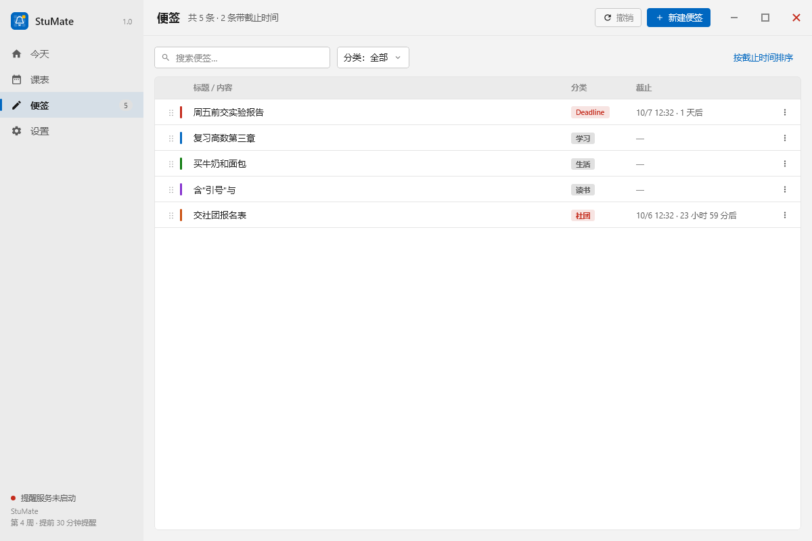
标题 / 内容。「买牛奶和面包」「预约图书馆研时间」只有一行 ——
因为它们没有内容，content 为空时第二行整行不渲染（不是渲染一个空行）。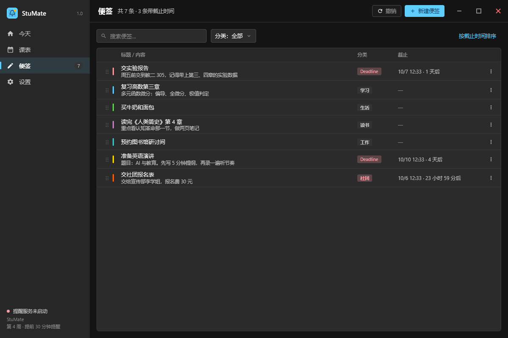
onSurface，
内容 11.5sp onSurfaceVariant（复用 HighlightSpec.titleColor +
alpha = 0.62f，没有新增 token）。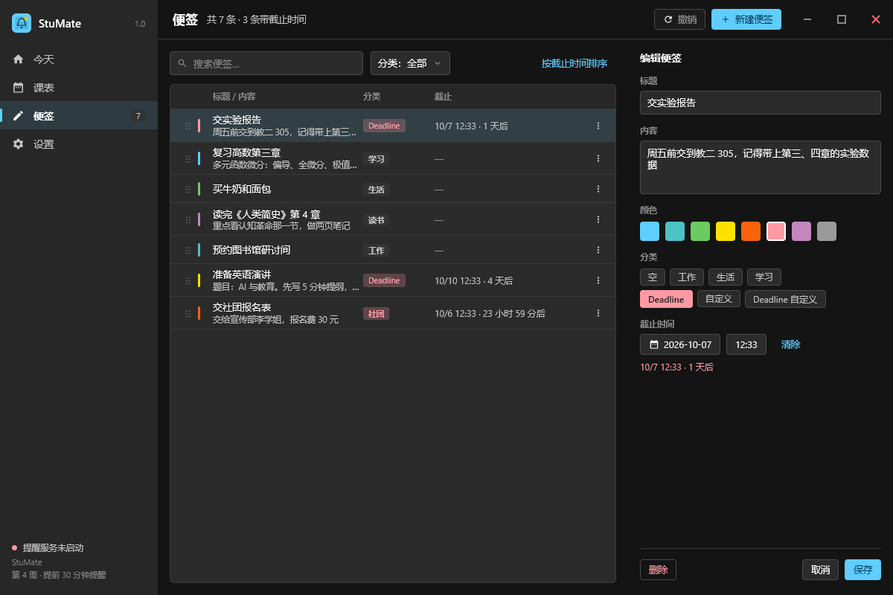
Column(Modifier.weight(1f).verticalScroll(…)) 里，
「删除 / 取消 / 保存」钉在面板底部 —— 窗口压到最小 600dp 高时按钮不会跑出可视区。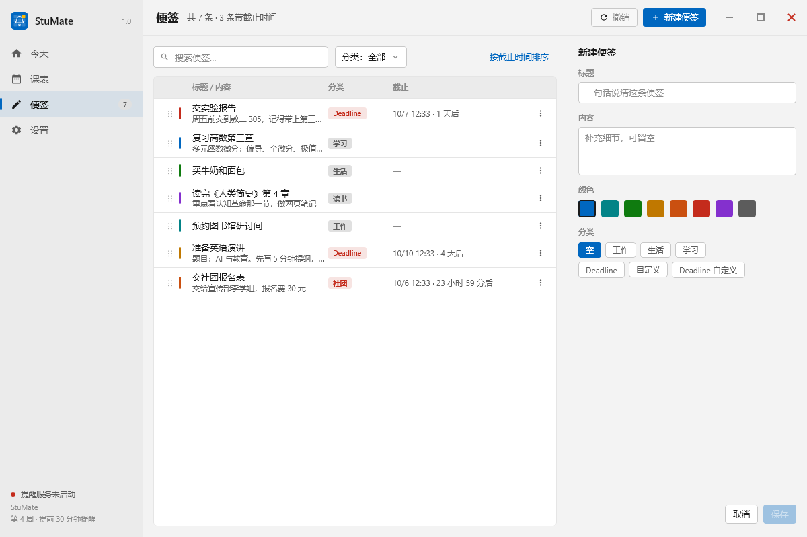
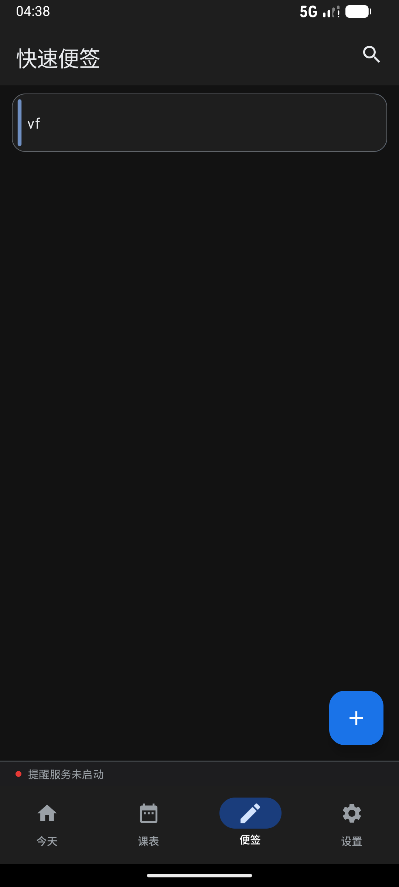
vf 现在是标题，内容为空 → 单行。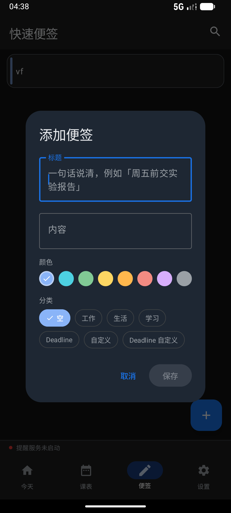
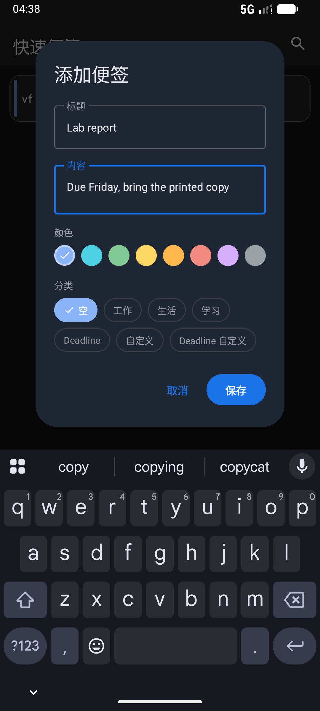
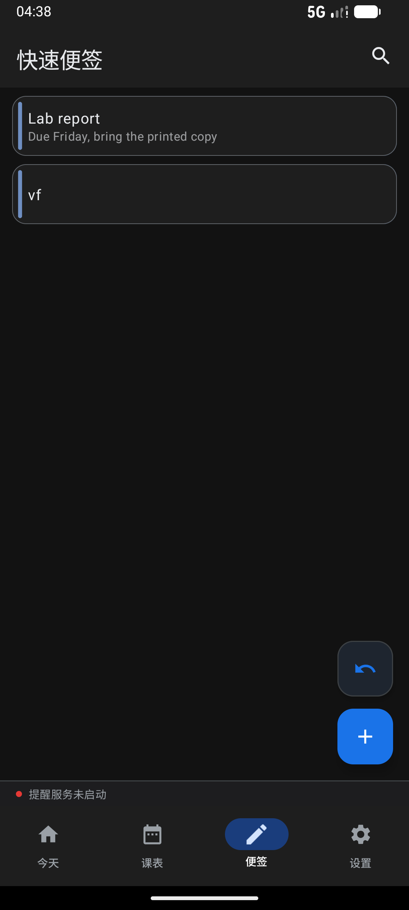
vf 单行。
同一列表里两种形态共存，正是「内容可空」该有的样子。
安卓端标题 15sp / 内容 12sp（alpha 0.62f，与桌面端同一个比值），都限 maxLines = 1。
弹窗里「内容」maxLines = 6、最小高 72dp。
⚠️ 截图里的文字是 ASCII：adb shell input text 不吃非 ASCII，中文只能靠 IME。
要截中文效果图得直接写库（本页不做）。
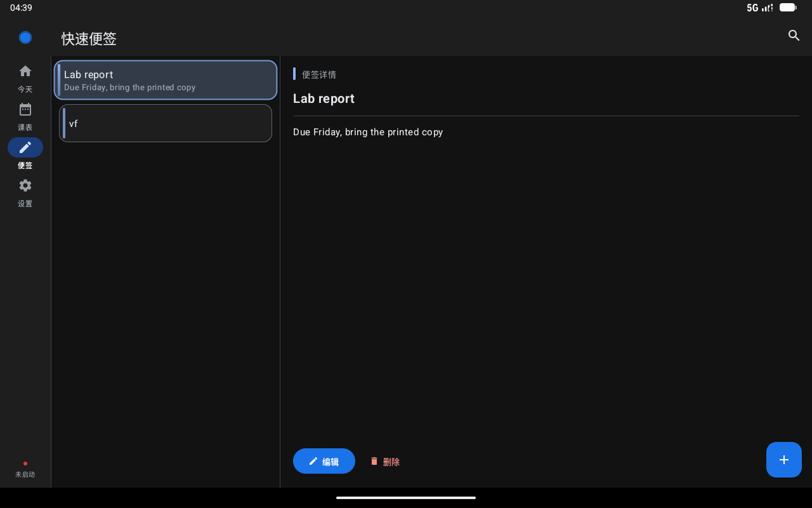
outlineVariant 分隔线 + 正文。正文为空时显示
「这条便签没有正文」而不是留白。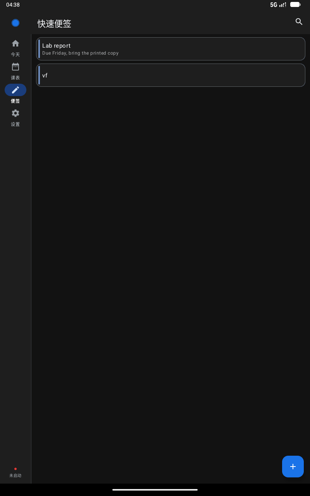
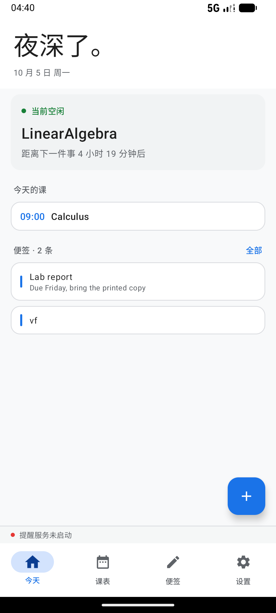
NoteSummaryRow 与便签页
走的是同一套排版，两处不能只改一处。cmd uimode night），
标题用 onSurface、内容用 onSurfaceVariant，
两行在浅底上同样分得开。| 项 | 命令 / 环境 | 结果 |
|---|---|---|
| 桌面端单测 | ./gradlew --offline test |
163 / 163（原 160，+3） |
| 桌面端 v8→v9 迁移 | tools/verify_v9_migration.py |
34 / 34 断言通过 |
| 安卓端单测 | gradle --offline testDebugUnitTest |
156 / 156（原 153，+3） |
| 安卓端编译 | gradle --offline assembleDebug |
BUILD SUCCESSFUL（38s） |
| 安卓端真机迁移 | 装新包 → 启动 → 停 → 拉库比对 | user_version 8→9，2 条便签标题迁移，软删除保留 |
| 服务端 | — | 零改动（data 是不透明 JSON） |
legacyBackupWithoutTitleFallsBackToText —— 老备份（只有 text）能被新端读出，进 title。titleWinsOverLegacyTextField —— 两个字段都在时以 title 为准（镜像字段不能反过来覆盖真值）。encodedNotesKeepLegacyTextFieldAsTitleMirror —— 断言原始 JSON 里确实有 "text":"交作业"，
不是只断言反序列化结果（否则镜像写没写根本测不出来）。
encodeNotes / decodeNotes 是备份与同步共用的同一份编解码
（entity = "note"，data 存整条记录）。所以这 3 条测试
同时覆盖了「备份文件能不能被新端打开」和「云同步拉下来会不会丢便签」两件事。
| 项 | 状态 |
|---|---|
删掉 text 镜像写入 |
故意留着 —— 老客户端还在跑。等确认无老端后再做，见第一节。 |
| 便签「拖动排序 / 大力拖动移除」 | 不在本次范围 用户明确暂缓。 |
| 内容支持富文本 / 换行预览 | 不在本次范围 列表里内容固定 1 行 + 省略号；详情页可看全文。 |
桌面端 syncSmoke 端到端 |
本次未跑 —— 协议层没动，镜像字段只影响 data 内部结构。 |
| 层 | 桌面端 | 安卓端 |
|---|---|---|
| 实体 / 表 | data/NoteEntity.kt、data/Db.kt（+migrateToV9） |
data/NoteEntity.kt、data/AppDatabase.kt（+MIGRATION_8_9） |
| DAO | data/NoteDao.kt、data/SyncDao.kt |
Room DAO（随实体自动） |
| 编解码 | data/backup/Backup.kt（SCHEMA 2 → 3） |
data/backup/Backup.kt（SCHEMA 2 → 3） |
| ViewModel | data/MainViewModel.kt（addNote / updateNote） |
data/MainViewModel.kt（同签名） |
| UI | ui/fluent/NotesPage.kt、ui/fluent/TodayPage.kt、ui/fluent/AppShell.kt |
ui/MainScreen.kt、ui/TodayScreen.kt |
| 工具 / 测试 | tools/seed_demo.py、tools/verify_v9_migration.py（新）、3 个测试文件 |
tools/shoot_notes_v14.py（新）、3 个测试文件 |
两端代码一行都不共享（包名相同但是两个独立工程），所以上面每一行都是各写了一遍。 这是本项目的既定约束，不是遗漏。